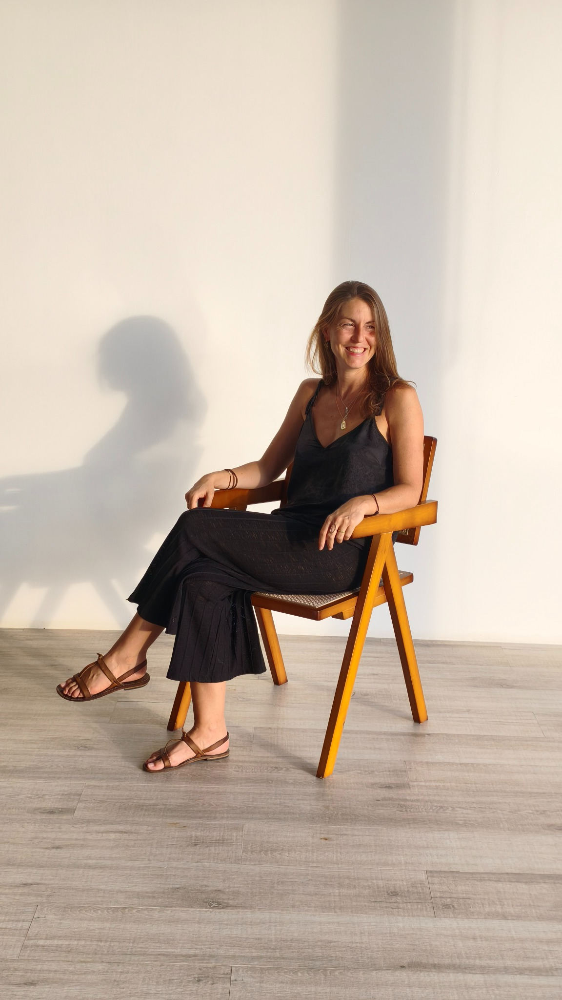
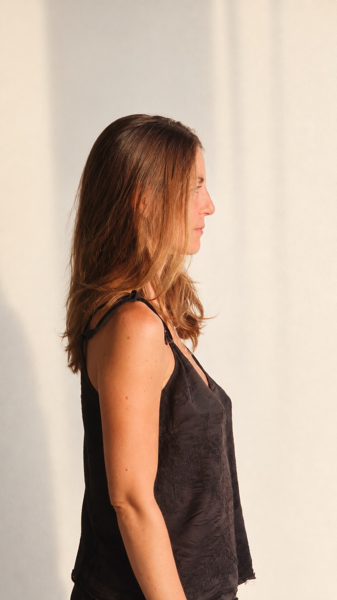
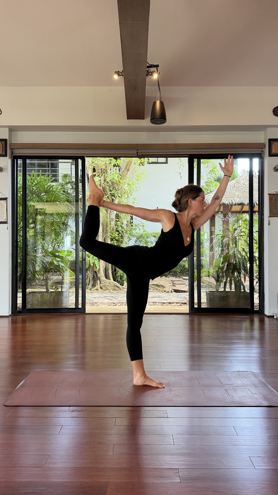
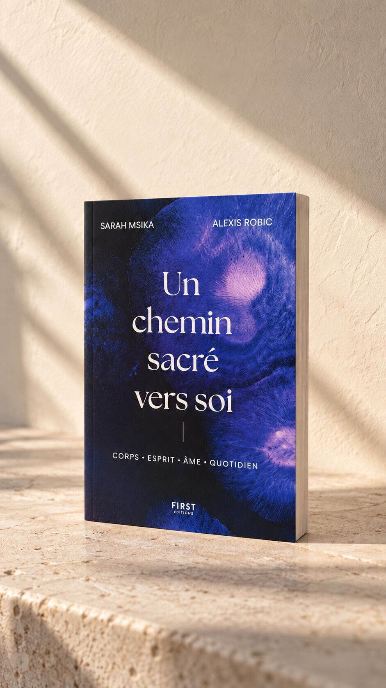

Concevoir
Désir d’enfant, fertilité, préparation du corps, histoire familiale, intention et conscience du passage.
Conception · Maternité · Conscience · Transmission
Un espace pour interroger ce que signifie concevoir, porter, mettre au monde et accompagner un enfant, avec plus de présence, de liberté et de conscience.
Être tenu(e) informé(e)
Un territoire à part
La maternité n’est pas un sujet isolé. Elle engage le corps, l’histoire, l’intuition, le couple, la lignée, le quotidien et la façon dont nous imaginons le monde à transmettre.
La conception, la grossesse, le postpartum, la spiritualité et l’éducation alternative seront ici abordés comme les dimensions reliées d’un même chemin. Il ne s’agit pas de proposer un modèle à suivre, mais d’ouvrir un espace de discernement, de liberté et de transmission.

Entrepreneure, investisseuse, médium, autrice et mère, Sarah Msika relie depuis plus de dix ans des mondes que l’on oppose encore : la stratégie et l’intuition, les connaissances contemporaines et les sagesses ancestrales, l’ambition et l’attention au vivant.
Après cinq années d’histoire de l’art et de droit à la Sorbonne, un passage chez Christie’s et Artcurial, puis par le conseil en stratégie chez PwC, elle quitte le monde corporate à vingt-six ans pour entreprendre. Avec Sidney Delourme, elle crée Plantation Paris, la plus grande ferme urbaine sur toiture d’Europe, puis développe Cultivate et s’engage auprès de projets qui réinventent nos façons de vivre, de nous nourrir et de prendre soin de nous.
En parallèle, Pointus l’amène à parcourir plus de trente pays, à rencontrer des praticiens et à explorer le yoga, le pranayama, l’ayurvéda, la spiritualité et la médiumnité. Cofondatrice d’Inné et coautrice avec Alexis Robic d’Un chemin sacré vers soi, elle transforme aujourd’hui ce parcours en transmission.
Sarah donne naissance à son fils à domicile, au terme d’une grossesse vécue comme une exploration consciente, spirituelle et profondément reliée au corps. Le sport, le mouvement, le yoga, l’écoute de son intuition et une préparation physiologique ont accompagné ce passage. Cette expérience, de la conception au postpartum, est l’un des fondements de cette plateforme : transmettre ce qu’elle a appris, éprouvé et choisi, sans en faire un modèle unique.
Connectons-nous
Recevez les premières lettres, les nouvelles liées au livre et l’annonce de l’ouverture de la plateforme.
De l’origine à la transmission
Une lecture décloisonnée de la maternité et de l’enfance, où le visible dialogue avec l’intime.
Désir d’enfant, fertilité, préparation du corps, histoire familiale, intention et conscience du passage.
Grossesse physiologique, alimentation, mouvement, transformation intérieure et puissance du corps.
Choix éclairés, naissance respectée, accueil du bébé, sécurité et premiers liens.
Développement, rythmes, autonomie, nature, pédagogies alternatives et intelligence propre de l’enfant.
Valeurs, spiritualité, conscience, héritages choisis et construction d’une vie familiale singulière.

Corps · Esprit · Âme · Quotidien
Le corps sait.
L’enfant sait.
À nous de créer l’espace pour entendre.
Une approche incarnée, nourrie par l’expérience, l’étude, les pratiques traditionnelles et une attention radicale au vivant.
Je ne me présente pas comme une experte. Je partage une expérience vécue, nourrie par des années de recherche, d’exploration et de pratique, pour éclairer celles et ceux qui avancent sur des questionnements proches des miens.

Le premier passage
« Un véritable manuel de vie consciente. »
Sidney DelourmeEt si ce que vous cherchiez ne s’apprenait pas, mais se révélait ? Sans dogme ni solution miracle, ce livre réunit sciences contemporaines, sagesses ancestrales et expérience vécue. Une invitation à observer, ressentir, expérimenter et choisir, afin de construire un chemin véritablement vôtre.
Précommander sur AmazonLa suite s’écrit maintenant
Une plateforme dédiée à la conception, à la maternité, à l’enfance et à la conscience est en train de naître.
Être tenu(e) informé(e)